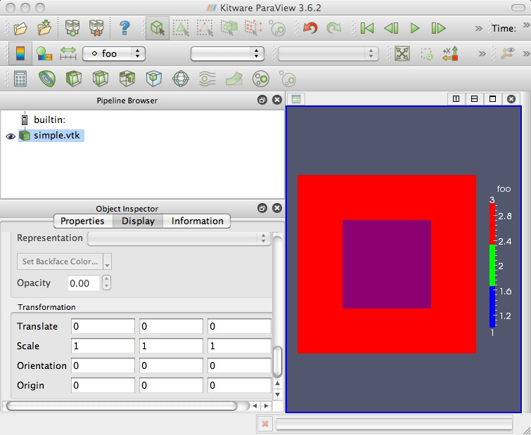
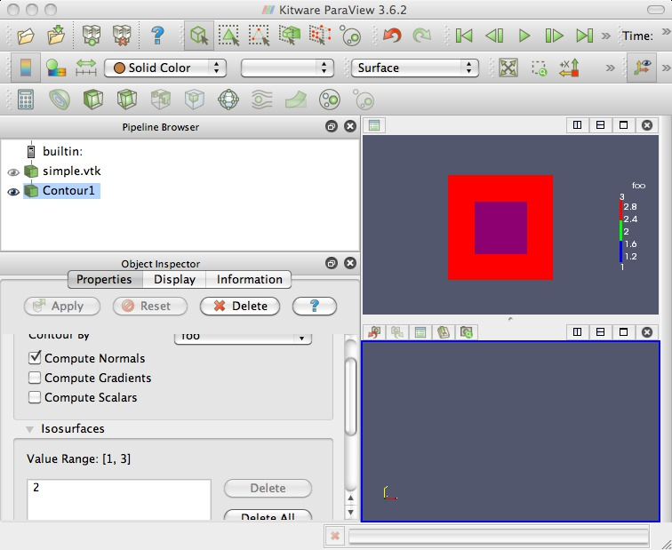
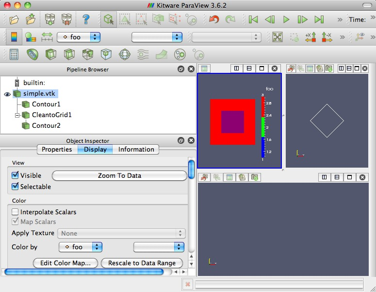
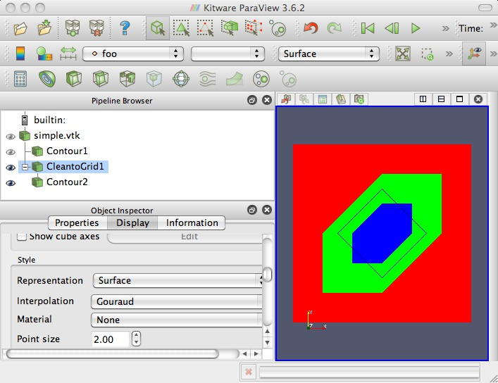

Some experiments using ParaView on the following simple datafile:
(I guess my first question should be: is this a valid/meaningful VTK-formatted file?)
# vtk DataFile Version 3.0 silly data ASCII DATASET STRUCTURED_POINTS DIMENSIONS 3 3 1 SPACING 1 1 1 ORIGIN 0 0 0 POINT_DATA 9 FIELD FieldData 2 foo 1 9 float 3 3 3 3 1 3 3 3 3 bar 1 9 float 4 4 4 5 5 5 6 6 6
(Note: In my Prefs/Options: General: I have "Auto Accept" checked)

What exactly is being displayed here? With a Blue-Red colormap, why is there no blue?

Adding a Contour filter (with isovalue=2). Q1: How can I force it to use the existing graphics window? Q2: Why doesn't the contour appear?

Some help from the PV mailing list: Need to use a "Clean to Grid" filter on the image data before applying the contour (not sure why). Also learned of "Convert to" 2D/3D views when right click in view's banner. Just beware of the visibility (eyeball) icons afterward.

After converting views to 3D.